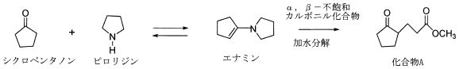

令和3年度 問3 有機化学及び燃料
シクロペンタノンとピロリジンを反応させるとエナミン（enamine）が生成し、これに、α, β－不飽和カルボニル化合物を反応させるとMichael型の付加が起き共役付加生成物が生じる。この反応に関する次の記述のうち、最も適切なものはどれか。

①
エナミン分子中の求核性炭素原子はピロリジンのN原子と結合しているsp 2 混成炭素原子である。
②
エナミンに、α, β－不飽和カルボニル化合物としてアクリル酸エチル（CH 2 =CH-CO 2 CH 2 CH 3 ）を反応させ、その後加水分解すると化合物Aが得られる。
③
エナミンは電子的にエノラートイオンに似ている。窒素の非共有電子対の軌道が二重結合のp軌道と重なることによってN原子から2つ離れた不飽和炭素原子上の電子密度が減少して、この炭素の求核性を強めている。
④
上記反応で生成したエナミンにアクロレイン（CH 2 =CH-CHO）を作用させても反応は進行しない。
⑤
エナミンは中性であり、合成が容易で、取り扱いも簡単である。
正答
⑤ エナミンは中性であり、合成が容易で、取り扱いも簡単である。
1番のエナミン分子は共鳴構造（N-C=C ⇔ N+=C-C–）によりα炭素の電子が豊富となり求核性を持ちます。
2番のアクリル酸エチルとの反応では、エナミンの二重結合とアクリル酸エチルのβ炭素が反応します。最後に加水分解することでピロリジン型置換基がケトンに変わります。エナミン生成から加水分解まで一連の反応をStorkエナミン反応と呼びます。生成する化合物はAではなく、エステルにエチル基が結合した化合物（-CO2CH2CH3）となります。
3番のエノラートイオンはC-N結合がC=O結合になったイオンを指します。電子的にエナミンと似ています。1番に記載した通り、N原子から2つ離れた不飽和炭素原子（α炭素）の電子が豊富となり求核性を持つため誤りです。
4番のアクロレインでもβ炭素が反応します。
5番が適切な内容です。2級アミンとカルボニル・ケトンを酸触媒下で脱水反応させると容易に得られます。可逆反応なため水を除去しながら平衡を傾けると反応が進行します。エナミンの窒素原子がもつ非共有電子対は二重結合と共役しているため、電子密度が分散され中性を保ちます。